Los emisores de infrarrojo, en versión monotubo o doble tubo, se fabrican con diferentes longitudes de onda:
. Onda media - Mínima inercia térmica.
. Onda media rápida - Ausencia de inercia térmica.
. Onda media larga - Mínima inercia térmica.
. Onda corta - Ausencia de inercia térmica.
. Halógeno - Ausencia de inercia térmica.
La elección de la frecuencia depende de la absorción del material, necesidades específicas de calentamiento, velocidad de proceso y tipo de aplicación.
La aplicación del reflector de oro concentra la radiación infrarroja. Esto permite dirigirla hacia el objeto deseado asegurando una total eficacia. Ventajas:
La energía de calentamiento se transfiere tan rápidamente al objeto que su superficie alcanza la temperatura de curado con un calentamiento mínimo del soporte.
Mínima inercia térmica.
Regulación precisa y ahorro energético.
Barritas de cuarzo
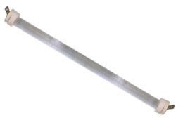
Elemento calefactor de hilo de aleación de Níquel-Cromo.
Tubo de cuarzo de Ø10 mm.
Soporte cerámicos resistentes a la temperatura.
Conexión con terminales faston 6'3 mm.
Tensión normalizada: ~230 V.
Bajo pedido se pueden suministrar con salidas de conexión por rabillos de fibra de vidrio de la longitud solicitada, otras longitudes, voltajes o potencias.
Monotubulares onda larga 77F
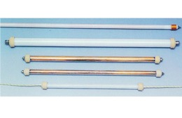
Mínima inercia térmica.
Fabricados en cristal de cuarzo transparente o translúcido. Con ó sin reflector de oro incorporado.
Conexión mediante cable o tornillo. Aislantes de esteatita.
Bajo pedido, los tubos se fabrican a medida del cliente, pudiendo variar su potencia, voltaje, longitud, etc. El sistema de sujeción se realiza mediante clips fabricados en acero inoxidable.
Monotubulares de onda media IRCM
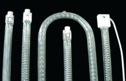
El filamento del tungsteno usado en estos calentadores es del tipo "porcupine" o estrella. Puede funcionar con temperaturas de hasta 1500 °C. El tiempo de respuesta es de pocos segundos.
Mínima inercia térmica.
Fabricados en cristal de cuarzo transparente.
Conexión mediante casquillos R7s.
Fabricación a medida.
Bitubo de onda media 77P
Mínima inercia térmica.
Fabricados en cristal de cuarzo transparente.
Con ó sin reflector de oro incorporado.
Uno o dos extremos de conexión.
Modelos normalizados y fabricación a medida del cliente. El sistema de sujeción se realiza mediante clips fabricados en acero inoxidable.
Emisores de onda corta IRCC
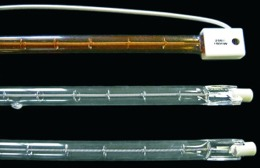
Los emisores halógenos de infrarrojos de onda corta IRCC permiten que el filamento de tungsteno alcance temperaturas de hasta 2600 °C. Con un tiempo de respuesta extraordinariamente rápido, permiten ciclos On/Off adecuados a cualquier aplicación.
Mínima inercia térmica.
Fabricados en cristal de cuarzo transparente
Conexión mediante casquillos R7s.
Bitubo de onda corta, modelos 81P
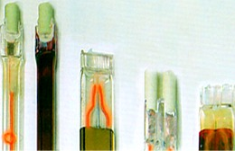
Elementos ausentes de inercia térmica.
Totalmente indicados para procesos que requieran gran velocidad en el encendido / apagado de los tubos, así como el alcance inmediato de la temperatura deseada.
Fabricados en cristal de cuarzo transparente.
Con ó sin reflector de oro incorporado.
Uno o dos extremos de conexión.
Bajo pedido, los tubos se fabrican a medida del cliente.
Equipos de calentamiento
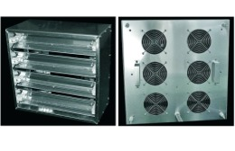
Eficiente y robusto calentador que proporciona radiación infrarroja de onda media y larga. Se usa en aplicaciones que van desde termoformar o precalentar, al tratamiento del negro de fundición.
Está fabricado usando un proceso especializado que requiere una aleación de un hilo resistivo eléctrico, el cual es fundido al cuerpo cerámico. Posteriormente, al cuerpo cerámico se le da una capa de esmaltado para protegerlo de la humedad.
Modelos OSC y OSCK, estos con termopar incorporado.
Emisores cerámicos infrarrojos OSC
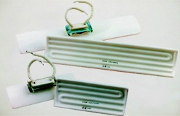
Eficiente y robusto calentador que proporciona radiación infrarroja de onda media y larga. Se usa en aplicaciones que van desde termoformar o precalentar, al tratamiento del negro de fundición.
Está fabricado usando un proceso especializado que requiere una aleación de un hilo resistivo eléctrico, el cual es fundido al cuerpo cerámico. Posteriormente, al cuerpo cerámico se le da una capa de esmaltado para protegerlo de la humedad.
Modelos OSC y OSCK, estos con termopar incorporado.
Emisores cerámicos infrarrojos OSP
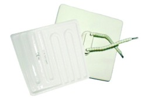
Eficiente y robusto calentador que proporciona radiación infrarroja de onda media y larga. Se usa en aplicaciones que van desde termoformar o precalentar, al tratamiento del negro de fundición.
Está fabricado usando un proceso especializado que requiere una aleación de un hilo resistivo eléctrico, el cual es fundido al cuerpo cerámico. Posteriormente, al cuerpo cerámico se le da una capa de esmaltado para protegerlo de la humedad.
Diversas medidas y potencias.
Emisores cerámicos infrarrojos OSH
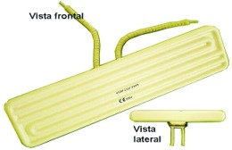
Eficiente y robusto calentador que proporciona radiación infrarroja de onda media y larga. Se usa en aplicaciones que van desde termoformar o precalentar, al tratamiento del negro de fundición.
Está fabricado usando un proceso especializado que requiere una aleación de un hilo resistivo eléctrico.
Emisores cerámicos infrarrojos BOS
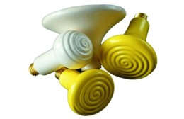
Los emisores cerámicos de bulbo se usan principalmente en el sector agropecuario: granjas de animales, veterinarios, etc.
Robusto en su diseño, su espectro de emisión infrarroja se sitúa entre los 2 - 10 µm. Su conexión se efectúa mediante un casquillo cerámico E27.
Pantallas de infrarrojos de cuarzo PQ
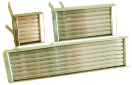
Las pantallas emisoras de infrarrojos de cuarzo proporcionan un calentamiento por radiación de infrarrojos en una longitud de onda media entre 1,4 y 8 micrometros. Son los más adecuados para aplicaciones industriales que requieren calefactores de onda media de reacción rápida.
Diversas medidas y potencias.
Infrarrojo compacto IC1003
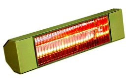
Emisor infrarrojo para calefacción de espacios abiertos.
Modelo orientable instalación a pared, bajo estructura o bajo paraguas.
Zona de calentamiento:
15 / 18 m² en espacios interiores
12 m² en espacios exteriores
Resistente al agua IP-X5. Protegido contra la lluvia y salpicaduras de agua
Potencia=1500 W, Alimentación=220/240 V
Infrarrojo compacto IC1013NG
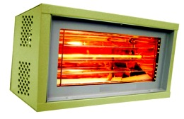
Emisor infrarrojo para calefacción de espacios abiertos.
Modelo orientable instalación a pared o bajo paraguas.
Zona de calentamiento:
20 / 25 m² en espacios interiores
16 m² en espacios exteriores
Resistente al agua IP-X5. Protegido contra la lluvia y salpicaduras de agua
Potencia=2000 W Alimentación=220/240 V
Infrarrojo compacto IC1007
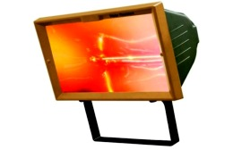
Emisor infrarrojo para calefacción de espacios abiertos.
Modelo orientable instalación a pared.
Resistente al agua IP-54. Protegido contra la lluvia, salpicaduras de agua, humedad y polvo
Potencia=1300 W, Alimentación=220/240 V
Infrarrojo compacto IC1008
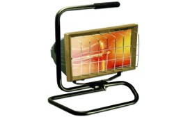
Modelo para suelo.
Zona de calentamiento:10 m²
Resistente al agua IP-54. Protegido contra la lluvia y salpicaduras de agua.
Potencia=1300 W, Alimentación=220/240 V
.
Infrarrojo compacto IC1014FM
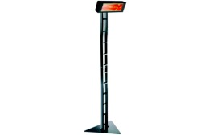
Modelo sobre pie.
Zona de calentamiento: 20 m²
Resistente al agua IP-X5. Protegido contra la lluvia y salpicaduras de agua.
Potencia=2000 W, Alimentación=220/240 V